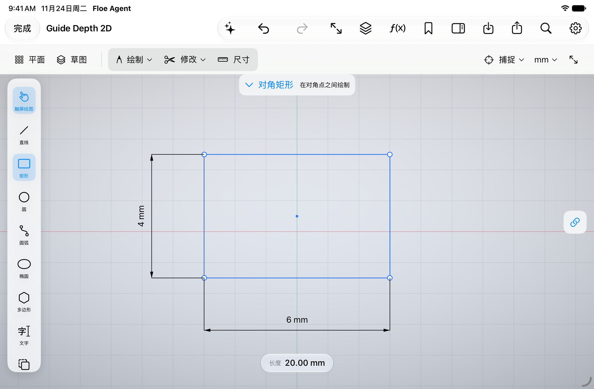

スペースと専門作業台
概要
Floeの個人用ライブラリおよび専用作業台向けのタスクベースのチュートリアル：スペースファイルと作品、会議、音楽、図、製造および3Dプリンティング、ネットワークツールボックス、そして化学プロジェクト。 モデル、タスク、ノート、Office の基本については、こちらをご覧ください。 ユーザーマニュアル まず。
どのビルドが必要ですか？
Floe のチャンネルは異なる機能セットを備えています。 以下のラベルはワークフローのリリースベースラインを示します；現在のチャンネルバージョンと検証日は保持されています 現在のステータス:
| ラベル | どこで入手しますか？ | ここで取り上げる内容 |
|---|---|---|
| 1.7.74 | App Store, iOS/iPadOS 26+ | 安定した公開リリース。 1.7.74 とラベル付けされたセクションのみが適用されます；Space と専門的な作業台はまだこのビルドにありません。 |
| 1.8.5 ベースライン | オリジナルリリース; 新しいインストーラーを選択する際は、チャンネルのステータスをフォローしてください | スペース、会議、音楽、図表、製造と印刷、ツールボックス、化学に関するオリジナルチュートリアルのベースライン。 |
| 1.8.6 追加 | 未署名のIPAが公開されました; TestFlight の可用性は別です | LaTeX、schematic/PCB、生物学、そしてCADのエンジニアリング解析エントリが含まれています；高度なPCBおよびシミュレーション作業は進行中です。 |
| その他の専門編集者 | 選択されたリリースと統合レコードを確認してください | GIS、フォントデザイン、表記、およびImage Playgroundは別々のスコープと資格を有し、開発変更は自動的にインストーラーに反映されません。 |
設定 → 診断と概要で、インストール済みのバージョンを確認してください。 チャンネルごとの可用性は追跡されます リリースおよびインストールのステータス; その リリースセンター すべての公開されたビルドを一覧表示します。
1. スペース：あなたのファイルと作品 — 1.8.5

New screenshots in this guide show Floe 1.8.72 (393) in the iPad Simulator.
Space は、Floe に個人が所有するすべてのもの、すなわち Notes ライブラリと編集可能な作品やファイルのライブラリを格納するサイドバーの拠点です。
Choose a workbench in 概要 based on what you want to make. Name the project and choose where to keep it. Use Continue working いや Files to reopen the project later.
| What you are working on | Which feature to use | Typical result |
|---|---|---|
| Class notes, reading annotations or reference material | ノート. Keep handwritten and annotated pages in documents. | Notes you can keep adding to |
| Meeting audio, transcripts and decisions | Meeting Notes. Keep the audio, transcript and highlights together. | Recording, transcript and minutes |
| Evolving drafts, reference images and candidate designs | Canvas in Creative Mode. Arrange and compare objects on a board. | A board you can keep arranging |
| Processes, sequences, relationships or system structure | Diagram. Use shapes and connections to show relationships. | An editable diagram |
| Photo corrections, cover art or a transparent icon | Drawing / image. Work with text, strokes, selections and masks on layers. | An editable image project and a PNG or other image |
| Cutting clips, adding music and lining up subtitles | ビデオ. Align picture, sound and captions on a timeline. | A video project and MP4 |
| Arranging melodies or keeping musical parts separate | Music project. Arrange notes, audio and instruments on tracks. | An editable song, audio or MIDI |
| Plans, parts, floors or circuits | 2D Design, 3D Design, Building Project or Electronics Design. Choose according to whether you are working with dimensions, solids, storeys or circuits. | A drawing, solid, building project, schematic or PCB |
| Viewing geographic data or inspecting regions by field | Map Editor. Work with layers, features, attributes and coordinate systems. | A map project or layer data |
| Typesetting a paper, equations and references | LaTeX document. Edit the source and compile to inspect the result. | LaTeX project and PDF |
| A quick calculation, conversion or measurement | Toolbox. Open the utility for the immediate job. | A calculation, dimension or angle |
最初のウォークスルー：
- 開く スペース サイドバーから 概要、ノート、ファイル、ツールボックスの4つのセクションがあります。
- 概要には、クイックアクセスエントリ、ピン留めされた作品、フォルダー、そして「Continue working」（最近開いたノートと作品）が表示されます。
- ファイルはあなたの作品を一覧表示します。 リストとサムネイルを切り替え、タイプでフィルタリングできます：ドキュメント、図面/画像、ビデオ、または CAD。
- To start a particular kind of work, open its shortcut or workbench under 概要. To choose a destination first, open the folder under Files, then choose a type from +. Enter a name, check Location, and tap Create. Start blank notes and meetings from Notes → +.
- インポートを使用して既存のファイルを取り込むか、 他の場所をご覧ください... すべてのワークスペースファイル、アーカイブされたチャットファイル、および保持（回復）された文書にアクセスするために。 削除された作品は復元できます 最近削除されました.
所有権と貯蓄：
- 作品はお客様の個人用オンデバイスライブラリに保存されています。 それらはいずれのチャットタスクにも属していません。チャットを削除しても作業は削除されませんし、作業を削除してもタスクやプロジェクトファイルには触れません。 削除する前に重要なものをエクスポートしてください。
- 編集者は作品自体に保存します。 作業を「Continue working」から閉じて再度開いて、最新の状態を確認してください；復元コピーは保存されたファイルを受け入れるまで、保存された文書の下に残ります。
- 作業は独自のアシスタント会話（作業アシスタント、または会議用ミーティングアシスタント）を搭載できます。 その会話は作業の一部であり、未送信の下書きを保持します；アシスタントに1つの作業へのアクセスを許可しても、他のファイルは開きません。
2. 会議：記録、文字起こし、議事録 — 1.8.5
ミーティングは、個人用ノートブック、ライブ録音、文字起こし、AI議事録を1つの作業に統合し、Notesから開きます。
初回ミーティング：
- 開く Space → Notes → + → Meeting Note, type a name and create it. In landscape, My Notes is on the left. Switch among 文字起こし, ハイライト そして Meeting Assistant on the right.
- To capture a meeting, use Start Recording at the bottom right. To work with a file, open Recordings and Media → Import Audio or Video. Enable live transcription if needed, or transcribe a saved recording later.
- Review the transcript under 文字起こし and organize minutes and to-dos under ハイライト. Review highlights before inserting them into your notes.
- 出る 自動AI分 議事録を議事録から更新し続けるか、会議アシスタントにこの会議に関する質問に答え、メモややることを整理するよう依頼してください。 未送信のドラフトは保持されます。
- 書き出す 単語またはPDFテキスト分 議事録テンプレートメニューから、フォローアップアクションをタスクフローに戻してください。

新しいビルドでの連続録画： 同じ会議の録画タイムライン内で一時停止し、再開してください。 録音を終了したら、再生し直して、文字起こしのセグメントをタップしてその時間を探してください。 既存の話者の名前を変更するか、同一人物を指すIDを統合してください。話者の分離は選択された認識サービスに依存します。 会議を再開し、録画、タイムスタンプ、修正された文字起こしを確認してください。
Play an imported recording. In Recordings and Media, select the imported file and tap Play Full Recording. The player appears at the bottom of the meeting screen. Pause or scrub to review it. In the transcript, select a timestamped segment to jump to its position. Check the transcript, highlights and action items before exporting minutes.

制限： 録音はデフォルトでデバイスに保存されます；クラウド文字起こしは、明示的に選択したサービスを使用し、そのプロバイダーから請求されます。 文字起こしの品質は、お客様の認識設定に従います（ユーザーマニュアル§16をご参照ください）。
3. 音楽プロジェクト — 1.8.5
スペースミュージックは、編曲、キーボード、ミキサー、DJのワークフローを1つのプロジェクトに統合します。
最初のプロジェクト：
- スペース → ファイルで、作成してください 音楽 作業し、名前を付けてください。
- ワークベンチは、ピアノロール、ドラムグリッド、キーボード、DJデッキなどの専用サーフェスに加えて、ミキサーとトラック用エフェクトも備えています。
- 音声やMIDI素材をインポートするか、アシスタントに編集の提案を依頼してください。各提案は、受諾する前に変更点を示します。
- 保存は自動的に作業に組み込まれます。 音声ファイルが欲しいときにレンダリングし、実際にレンダリングされたファイルと領収書を確認し、作品から共有またはエクスポートしてください。
このテストアップデートの音楽： スコアで、同じスコアを編集・保存する際に、譜表表記と番号表記を切り替えてください。 パフォーマンスサウンドを開いて、各パートの合成楽器音を選択してください。 実行および追加はオーディオをレンダリングし、現在の再生ヘッドに新しいトラックを挿入し、完了したらアレンジに戻ります。 通常の再生はオーディション用です。 「Staff」に戻すと、番号表示から除外された複雑なマークが表示されます。
新しいビルドでは、プレイヘッドから録画します： 再生ヘッドを目的の開始に移動し、オーディオまたはMIDI録音を選択してから、実行してください。 既存のミュート解除されたトラックはそれと共に再生され、古いクリップは保持されます。 停止し、同じタイムラインで新しいクリップを試聴し、保存して再度開き、位置を確認してください。 アレンジ録画、アセットプレビュー、モニタリング、DJ録画はそれぞれ独自のコントロールがあります。退出する前に、適切な画面でストップを確認してください。
キーボードは利用可能な高さをキーとして使用します。 ワイドスクリーンでは、インスペクタの表示/非表示インスペクタが右側のインスペクタを開いたり折りたたんだりします。 下位エディタを拡張して、パフォーマンス領域を拡大してください。
制限： AI支援編集は、設定されたモデルを使用し、再生およびレンダリングはデバイス上で実行され、プロジェクトの実際の機能に従います。
4. 図と混合キャンバス — 1.8.5
Diagram works well when the sequence or relationship matters. For an approval process, give each action a shape and connect the shapes in order. Reopen the work from Space → Files to check that its shapes and links are complete. Review the assistant's proposed changes before applying them.
Creative Mode Canvas keeps notes, images, documents and options for a topic together. Select an object to edit its content, or move it to rearrange the board. When comparing several image or drawing versions, keep the deliverables in their workbenches and use the canvas to record references and comparisons. See the free-form editing walkthrough.
5. 製造と3Dプリンティング — 1.8.5
CAD ドキュメントからの機械加工および印刷 製造 エントリー。
マシニングの手順：
- 2D/3D CAD デザインを開き、製造に入力してください。 まず機械を選んでください。
- ストック、座標、操作を設定します。アシスタントは現在のオブジェクトを読み取り、タスクの権限内で操作を提案できます。
- プレビューを実行して、ツールパスに沿って素材が削除される様子をご確認ください；実装された衝突チェックは実行中に報告されます。
- 結果を保存し、STLまたはツールパスをエクスポートして、保存された結果を再度開いて検証してください。 製造セル（マルチスピンドル/マルチタレット）プログラムは独立して保存され、後で読み取ることができます。
3Dプリントの手順：
- CAD の設計またはファイルから印刷プロジェクトを作成し、Floe が現在のジオメトリをそれにコピーします。
- プレート上にモデルを配置し、部品を追加または複製し、レイヤーの高さやインフィルなどのプレートごとの設定を調整します。
- 機械構成を選択してください：ベッドサイズ、座標原点、ノズルオフセット、カスタム開始/終了/ツールチェンジGコード、樹脂プリンター用樹脂プラットフォームの向き。
- スライス; 完了したスライスはプレビューを自動的に開き、保存された結果はそれらのパラメータにバインドされたままです。 プリンターが期待するGコードをエクスポートし、スライサーまたはホストで確認してください。
制限： 機械加工プレビューは、実装されたチェックのみを報告します――それらは完全な機械安全認証ではありません。 このビルドにはネイティブUSBプリンタードライバーは含まれていませんので、プリンターの通常の転送パスをご利用ください。 物理的な印刷および加工は、引き続きお客様の機械の実際の性能と安全規則に従って行われます。
6. ネットワークツールボックス — 1.8.5
開く Space → Toolbox. Choose a shortcut at the top, use the categories below, or search by tool name in the upper right. Toolbox holds both network sessions and day-to-day measurement tools.

- 診断： ping、トレースルート、DNS、ポートチェック、LAN検出、Wi‐Fi情報およびローミングチェック。 Wi‐Fi の名前と BSSID はシステム認可により読み取り専用であり、起動するまで何もスキャンされません。
- 接続とセッション： HTTP、WebSocket および MQTT クライアント、シリアルアシスタント（TCP、UDP または Bluetooth；USB にはサポートされている iPad が必要で、ドライバーはまだ出荷されていません）、さらにターミナルと VNC のリモートワークスペース。
- 分析： パケットキャプチャインポート（PCAP/PCAPNG）を備えたキャプチャブラウザ；AI分析は進捗を報告し、停止でき、正直にタイムアウトします。
- ユーティリティ: JSON のフォーマット、エンコーディング変換、QRコードおよびチェックサム。
新しいビルドにおける測定と日常ツール： スワイプ可能なトップエントリ、カテゴリ、または検索からツールを選択してください。全リストは以下に残ります。
- レベル、モーションセンサー、コンパス、圧力と高度： リーディングの閲覧を開始し、提供されたゼロ、ロック、または録音コントロールを使用し、完了したら収集を停止してください。 コンパスは磁北を示し、気圧に基づく高度は相対的な変化を示します。
- 定規と分度器、カメラ測定、写真測定： まず、実際の物体に対して画面定規を較正してください。 AR測定にはサポートされたハードウェアが必要です。 写真では、同じ平面上で長さ、角度、または面積を測定する前に既知の基準長さを設定し、必要に応じて注釈をエクスポートしてください。 ウィンドウまたはディスプレイの変更後に、キャリブレーションを再確認してください。
- 電卓とコンバーター、場所と地図： 式を評価するか、単位を入れ替えて結果をコピーしてください。 位置情報へのアクセスを許可した後、位置と正確性を確認し、次に場所を明示的に保存または共有するか、Notesに送信してください。
- 音声解析、拡大鏡と光、スキャンと認識： マイクまたはカメラを明示的に起動してください。 相対的な音声レベルとスペクトラムを検査し、ビューをズームまたはフリーズし、コードとテキストをスキャンして結果をエクスポートします。 音声読取は、校正された環境音圧ではありません。
- ストップウォッチとタイマー： ラップを記録し、名前付きカウントダウンを管理し、プロンプトが表示された際にシステムアラームを許可します。 マルチステージタスクタイマーについては、ユーザーマニュアル§17をご参照ください；システムアラームとモデルのフォローアップ実行は別々の結果です。
測定は、ネットワーク全体ではなく、1つのエンドポイントとパスを対象とします。 レポートは、選択したものだけをエクスポートします。
Calculate, convert and measure
- 開く Calculator and Conversion, enter
2×3in Calculator, and tap Calculate. The result, 6, also appears in History. Use the copy icon beside the result when you need it elsewhere. - 開く Unit Conversion, 選択してください Length, then millimetres and centimetres. Entering 1 gives 0.1 cm. Swap the units with the arrows to see 1 cm become 10 mm.
- Return to Toolbox and open Ruler and Protractor. In Angle, drag the handles and read the angle between the lines. Before measuring a real length on screen, align the blue marks to a reference of known size, then finish calibration. Before calibration, length appears in screen points.


7. 化学プロジェクト — 1.8.5
作成してください 化学プロジェクト 宇宙から → 新規 ネイティブ構造エディタは構造をプロジェクトに保存し、計算レコードはプロジェクトに添付されたままで、構造画像はNotesから参照できます。 設定された実行環境で重い再計算が実行されます — 長時間の作業を行う前に環境を確認してください。
<a id="8-coming-in-the-next-update-next-update-not-in-public-builds"></a>
8. 追加の作業台およびビルド要件
1.8.6 リリースノート これらの追加を公開されたインストーラに記録してください。
- LaTeX — プロジェクト作業台、ソース折りたたみ、PDF フルテキスト検索で、全画面変更にわたって読み取り/検索状態が保持されます。
- エレクトロニクス/PCB — スキーマティック/PCB の編集、キャンバスインタラクション、デザインルールのチェックおよび同期；PCB からスキーマティックへの更新には、差分プレビューと確認が含まれます。
- 生物学およびCADエンジニアリング解析 — Space に追加のネイティブ Workbench エントリが追加され、編集、プレビュー、保存/再開作業がリリース範囲に含まれます。
いくつかの高度な PCB とシミュレーション操作はまだ開発中であり、ネイティブ USB シリアルドライバはそのビルドには含まれていません。 これらのリリースノートは、すべての専門機能やそれ以降のソース変更が出荷されたことを証明するものではありません。
GIS、フォントデザイン、表記、Image Playgroundについては、確認してください。 スペシャリスト・エディター統合プラン, 有効な統合レコード および選択されたリリースノート。 可用性は機能固有です；ソース統合だけでは配信は成立しません。
Start a sketch in 3D Design
- で Space → Overview, open 3D Design, name it, and check its location. Open Sketch on the left for lines, rectangles, circles and other tools.
- 選ぶ Sketch → Rectangle and select a reference plane when prompted. To draw with your finger, enable Touch drawing using the hand icon on the left, then drag between opposite corners on the grid. Check that the four edges close. If dragging pans the view, check the switch, the rectangle tool and the current plane.
- 軽くたたく Exit Sketching and select the interior of the closed profile. Under Features → Extrude, set the distance to
2 mm, 選択してください New Body and confirm. A5 × 3 mmrectangle should produce a solid2 mmthick. If you cannot select the interior, return to the sketch and look for gaps or overlaps. - Close and reopen the project by name in Space → Files to confirm the solid was saved. For a mesh delivery, use the share icon at the top and choose STL → Save to Files. Check its dimensions and orientation in the receiving app. Keep the 3D project for further editing. See the unified 3D workbench for more.


Choose the right workbench
| What you want to work on | Where to start in Space | What to check |
|---|---|---|
| Floor plans with rooms | Overview → Building Project. Choose a storey before editing walls, rooms or drawings. | Units, the selected storey, and which objects belong to it after reopening. |
| 2D lines and dimensions | Overview → 2D Design, or open an editable DXF or DWG from Files. | Selected layer, objects, dimensions and units. Save and reopen. |
| A typeset paper | Overview → LaTeX Document. Edit the project source and compile the PDF. | Build log and PDF pages. Keep both the project and the delivery PDF. |
| Schematics and PCB layouts | Files → + → Electronics. Edit the schematic before reviewing the component and net changes in PCB. | Review sync differences before applying and run design rule checks after routing. |
| Map data | Files → … → Import geographic data…, or choose Map Editor from the new-project menu. | Select a specific layer and check its coordinate system, visibility, attributes and exported geometry. |
| A molecule for a lesson | Overview → Chemistry Project. Open or draw a molecule in the structure editor. | Structure diagram, saved project and the status of any calculation. |
| Sequence material for teaching | Overview → Biology Project. Open a project and inspect a record or annotations. | Record name, annotation range, and which file is the original or an exported copy. |
Available formats and workbench options depend on the installed build.
2D Design: draw a rectangle and deliver a DXF
- Create a drawing in Space → Overview → 2D Design. Check that the upper-right unit is mm, enable Touch drawing on the left, and choose Rectangle. Drag between two corners on the grid. The example measures
6 × 4 mmwith a20 mmperimeter. If the size differs, check the units, snapping and all four corners. - Use the share icon at the top, choose DXF, and choose a destination in Files. Open the DXF in the receiving CAD app to check that the profile is closed and its dimensions match the project.
- 軽くたたく 完了, then reopen the drawing by name in Space → Files and check its four edges. Use this drawing when continuing in Floe.

Maps: import, edit attributes and export GeoJSON
- Choose a GeoJSON file in Space → Files → … → Import geographic data…. Select its layer on the left, then tap Fit layer in the map toolbar. A small region may be hard to see at the initial world scale. Check that the layer is visible and contains features, then verify its coordinate system.
- 開く Table, select a feature and tap the field to edit. Press Return to apply the value and wait for it to save. For a test polygon with a
namefield, give it a new name while keeping its boundary. Reopen the project and the attribute table to confirm the value persisted. - Touch and hold the specific layer row and tap Export layer to open Export data / project. Choose GeoJSON and turn off Include all vector layers when you only want the selected layer. With the coordinate-system field left blank, GeoJSON uses EPSG:4326. Name the export and tap 申し込む. Open the result and check the feature count, attributes and geometry.
- If the import reports Unexpected EOF, export a complete file again from the original GIS project or check whether the copy was truncated, then retry. Once it succeeds, open the new project in Space → Files to verify the layer.


保存、エクスポート、ヘルプ
- 作業を閉じて再度開いて保存を確認し、受け入れたファイルがチェックアウトするまでリカバリーコピーを保持してください。
- 削除する前にエクスポートまたは共有してください。削除された作品は、同じデバイス上の「最近削除した項目」からのみ復元可能です。
- 質問とバグ報告： GitHub の問題 （プライマリサポートチャネル）；ビルド、デバイス、手順を記述してください。 診断のアップロードは任意であり、応答時間の保証はありません — パスワード、キー、またはプライベートファイルは決して含めません。